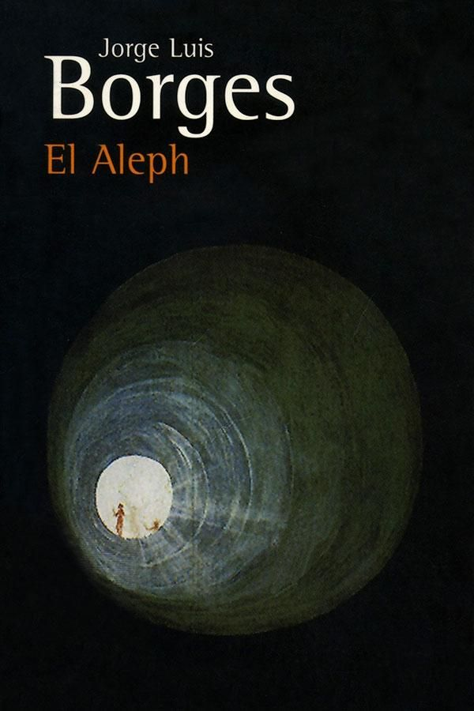

El Aleph
Borges siempre fue cuentista, pensador y filósofo de un mundo que interpretó a su modo, de la forma más genuina posible. En su haber quedan relatos tan maravillosos como Funes, el memorioso, Las ruina circulares, El sur pero, especialmente, El Aleph, cuento que daría título a su colección de relatos más popular. Publicado en 1945, El Aleph habla de la eternidad, esa búsqueda incesante por parte de un autor que localiza el punto donde se encuentran todos los universos en un sótano. Puro encanto metafísico.

La candente mañana de febrero en que Beatriz Viterbo murió, después de una imperiosa agonía que no se rebajó un solo instante ni al sentimentalismo ni al miedo, noté que las carteleras de fierro de la Plaza Constitución habían renovado no sé qué aviso de cigarrillos rubios; el hecho me dolió, pues comprendí que el incesante y vasto universo ya se apartaba de ella y que ese cambio era el primero de una serie infinita. Cambiará el universo pero yo no, pensé con melancólica vanidad; alguna vez, lo sé, mi vana devoción la había exasperado; muerta, yo podía consagrarme a su memoria, sin esperanza, pero también sin humillación. Consideré que el 30 de abril era su cumpleaños; visitar ese día la casa la calle Garay para saludar a su padre y a Carlos Argentino Daneri, su primo hermano, era un acto cortés, irreprochable, tal vez ineludible. De nuevo aguardaría en el crepúsculo de la abarrotada salita, de nuevo estudiaría las circunstancias de sus muchos retratos, Beatriz Viterbo, de perfil, en colores; Beatriz, con antifaz, en los carnavales de 1921